Problema 275
01. En un triángulo
ABC, M es el punto medio del lado AC y N es el punto del lado BC tal que CN =
2BN. Si P es el punto de intersección de las rectas AB y MN, demuestra que la
recta AN corta al segmento PC en su punto medio.
X Olimpíada Matemática
Rioplatense ( San Isidro, 12 de Diciembre de 2001)(Nivel I – Primer Día)
Solución de Ricard Peiró i Estruch Profesor de Matemáticas del IES 1 de Xest
(València):
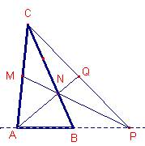
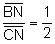 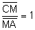 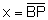
La recta MN corta la continuación del lado 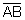
Aplicando el teorema de Menelao al triángulo :
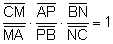 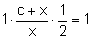
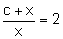
Entonces: 
Sea el punto Q intersección de la recta AN y la
recta PC.
Los segmentos 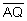 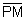 ,
,  que se cortan los tres
en el punto N. Aplicando el teorema de Ceva al triángulo :
que se cortan los tres
en el punto N. Aplicando el teorema de Ceva al triángulo :
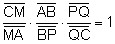
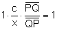
Como 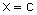
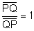
Entonces, Q es el punto medio del segmento 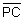
Con Cabri:
Figure barroso275.fig
Applet created on 2/10/05 by Ricard Peiró with CabriJava